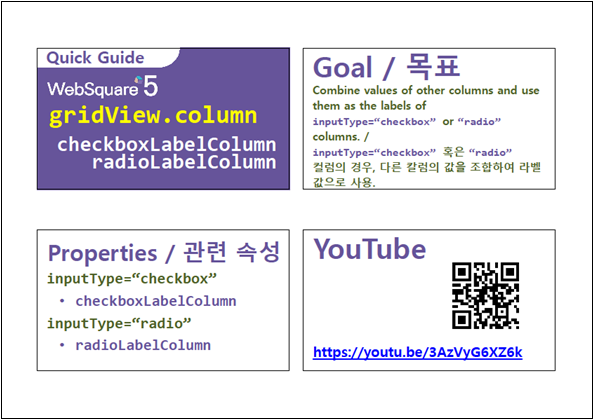

GridView의 컬럼의 InputType이 checkbox인 경우 label을 출력하는 예제입니다. 설정에 통해 고정 문자 또는 GridView의 컬럼 데이터를 조합하여 출력할 수 있습니다.
[기본설정] label 설정 없음
고정된 문자열로 checkbox의 label 출력하기
GridView의 컬럼의 값을 조합하여 checkbox의 label 출력하기
사용자 함수를 통해 checkbox의 label 출력하기
각 GridView의 첫번째 컬럼에 checkbox를 설정하였습니다. 출력된 chekbox의 label을 비교합니다.
영역 "[기본설정] label 설정 없음"의 GridView를 확인합니다
GridView의 컬럼의 inputType을 checkbox로 설정한 예시입니다.
컬럼에 checkbox만 출력됩니다.
[브라우저(Chrome) 실행 예시]
영역 "checkbox의 label - 고정 문자"의 GridView를 확인합니다
GridView의 컬럼의 inputType을 checkbox로 설정하고 고정된 문자열 "선택"을 label로 출력한 예시입니다.
[브라우저(Chrome) 실행 예시]
영역 "checkbox의 label 적용 - 컬럼 조합"의 GridView를 확인합니다
GridView의 컬럼의 inputType을 checkbox로 설정하고 GridView의 컬럼 "분류"와 "도서명"의 데이터를 label로 출력한 예시입니다.
[브라우저(Chrome) 실행 예시]
영역 "checkbox의 label 적용 - 사용자 함수 적용"의 GridView를 확인합니다
GridView의 컬럼의 inputType을 checkbox로 설정하고 사용자 함수를 통해 생성된 label을 출력한 예시입니다.
[브라우저(Chrome) 실행 예시]
DataList 생성 및 연결은 생략되었습니다.
적용할 컬럼의 속성을 정의합니다.
[필수] inputType="checkbox"
[필수] checkboxLabel="선택" //inputType="checkbox"인 경우 label을 표시하기 위한 속성
그림 1.웹스퀘어5 SP5 스튜디오의 Design 탭 예시 - 컬럼 선택
그림 2.웹스퀘어5 SP5 스튜디오의 Property View(속성창) 예시
[소스 코드 예시]
<!-- gridView 의 소스 본문 예시 --> <w2:gridView dataList="data:dlt_books_2"> <!-- 중략 --> <w2:gBody id="gBody1" style=""> <w2:row id="row2" style=""> <w2:column inputType="checkbox" checkboxLabel="선택" id="chk"></w2:column> <!-- 중략 --> </w2:row> </w2:gBody> </w2:gridView>
적용할 컬럼의 속성을 정의합니다.
[필수] inputType="checkbox"
[필수] checkboxLabelColumn="컬럼 ID" //inputType="checkbox"인 컬럼의 경우 다른 컬럼의 정보를 조합하여 해당 컬럼의 label을 생성
예시) checkboxLabelColumn="categoryLabel,label"
[선택] checkboxLabelDelimiter=" - " //컬럼 데이터 간의 구분자
그림 3.웹스퀘어5 SP5 스튜디오의 Design 탭 예시 - 컬럼 선택
그림 4.웹스퀘어5 SP5 스튜디오의 Property View(속성창) 예시
[소스 코드 예시]
<!-- gridView 의 소스 본문 예시 --> <w2:gridView dataList="data:dlt_books_2"> <!-- 중략 --> <w2:gBody id="gBody1" style=""> <w2:row id="row2" style=""> <w2:column inputType="checkbox" checkboxLabelColumn="categoryLabel,label" checkboxLabelDelimiter=" - " id="chk"> </w2:column> <!-- 중략 --> </w2:row> </w2:gBody> </w2:gridView>
STEP1. 컬럼의 속성을 정의합니다.
[필수] inputType="checkbox"
[필수] checkboxLabelFormatter="함수명" //inputType="checkbox"인 경우 CheckBox 버튼의 label로 표시할 값으로의 변환을 수행하는 함수 이름
예시) checkboxLabelFormatter="scwin.grd_exam4_checkboxLabelFormatter"
그림 5.웹스퀘어5 SP5 스튜디오의 Design 탭 예시 - 컬럼 선택
그림 6.웹스퀘어5 SP5 스튜디오의 Property View(속성창) 예시
스크립트 탭에서 속성 "checkboxLabelFormatter"에 정의 한 함수를 정의합니다.
[소스 코드 예시]
/** * 영역 [checkbox의 label 적용 - 사용자 함수 적용]의 checkboxLabelFormatter */ scwin.grd_exam4_checkboxLabelFormatter = function (row, col, label) { var jsnRow; var returnValue; jsnRow = dlt_books_4.getRowJSON(row); //현재 행의 json 데이터 추출 returnValue = "[" + jsnRow.categoryLabel + "] " + jsnRow.label; return returnValue; };
checkboxLabel
checkboxLabelColumn
checkboxLabelDelimiter
checkboxLabelFormatter
[웹스퀘어5 SP5 개발 가이드] GridView
링크 : https://docs1.inswave.com/sp5_user_guide/86bdcf48029b958b
[웹스퀘어5 SP5 개발 가이드] GridView inputType="checkbox"
링크 : https://docs1.inswave.com/sp5_user_guide/86bdcf48029b958b#3e94eba8977de29e
[웹스퀘어5 SP5 개발 가이드] GridView checkboxLabelColumn
링크 : https://docs1.inswave.com/sp5_user_guide/86bdcf48029b958b#aa7f33921242b3ad
GridView checkboxLabelColumn
링크 : https://youtu.be/3AzVyG6XZ6k
